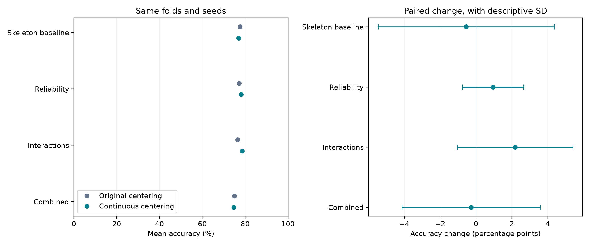

2026-11-15
Continuous hip-centering correction
Missing hip origins use an interpolated hip-to-box offset within continuous observed track segments. Reliable hip origins, no-hip fallback, network size and initialization are preserved.
The same 245 clips, 204 groups, folds and seeds are used in both experiments. Training and validation selections are recomputed. Accuracy changes use percentage points. Changes are continuous centering minus original centering.
| Model | Original centering | Continuous centering | Accuracy change (pp) | Macro-F1 change | AUC change | Improved/tied/worse runs |
|---|---|---|---|---|---|---|
| Skeleton baseline | 77.6% | 77.0% | -0.54 | -0.0075 | -0.0044 | 5/4/6 |
| Reliability | 77.1% | 78.1% | +0.95 | +0.0080 | -0.0006 | 8/5/2 |
| Interactions | 76.5% | 78.6% | +2.18 | +0.0228 | -0.0050 | 7/7/1 |
| Combined | 75.0% | 74.7% | -0.27 | -0.0051 | -0.0011 | 5/6/4 |

Exploratory paired comparison on previously inspected footage. Fold/seed observations are dependent; deviations and win counts are descriptive, not confidence intervals or significance tests. Interpolation uses the whole clip and can still be affected by box jitter, incorrect joints and track errors. Detection masks and confidence remain available. A feature correction does not prove external generalization.
All 140 saved fits were verified. The unchanged controls reproduce identical test scores and decisions. TCN score reproduction used cpu. Reference artifacts were read without modification.
Research notes | Detailed comparison | Paired runs | New experiment | Reference experiment